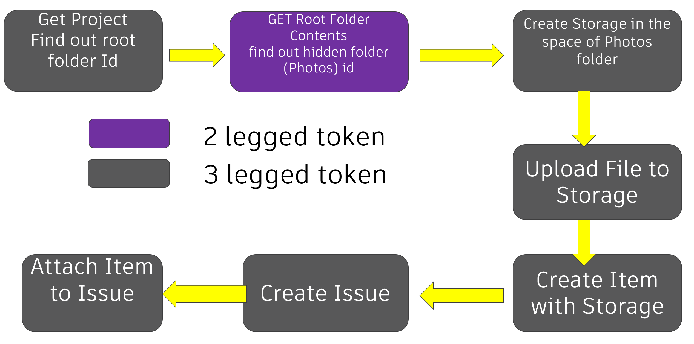
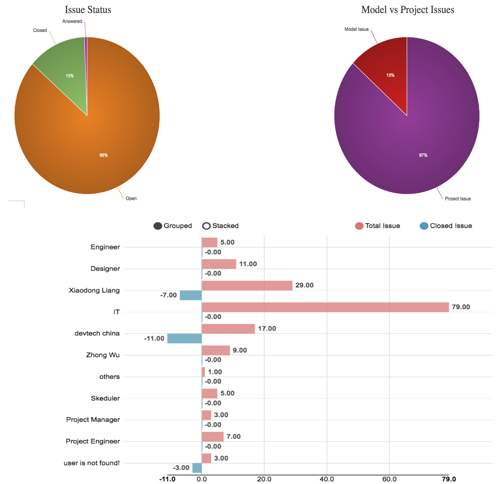

BIM 360 Issues API
Today, I am presenting a class on Design Automation for Revit or DA4R and the BIM 360 Issues API at the German Autodesk University in Darmstadt.
It is in German language: BIM360 News und Online Revit-Programmierung von BIM via Forge Design Automation API für RVT.
The first and main part is similar to yesterday's presentation
on Forge Design Automation for Revit at
the Forge DevCon conference.
Therefore, I will only share the BIM 360 slides (just the text, with most images missing) here now:
For your convenience, here is the slide deck including images in PDF format:
All the following information comes from a few base sources, so please refer to those to get it straight from the horse's mouth:
Overview
- Four Types of Issues
- Permissions
- Attachment
- Issues API
- Current Scope and Limitations
Four Types of Issues
- Document Issue in Project Level
- Field Issue in Project Level
- Document Issue in Document Level
- Field Issue in Document Level
Permissions
- Permission for Document Issues
- By default, every member of the project can create a document issue in project level
- By default, if a member has permission to a folder, she can create a document issue on the specific document within this folder
- Permission for Field Issues
- Basic: can view issues the member has created or assigned to
- View All: can view all, but cannot create
- Create: can create new and view created and assigned to
- View and Create: can create new issues and view all issues
- No permission with a folder: cannot view the model the field issue was created from
Attachments
- Attachment for Document Issue
- Attachment for Field Issue
- Field on PC can attach any kind of files to issue, such as photo
- Field on mobile can only attach photo format to an issue
- Where are the photos?
- A hidden folder named 'Photos’
- Save level as Plans, Project Files, Shop Drawings
Assignee
- Assign To
- User: valid member in this project
- Role: Engineer, Designer, ...
- IT: Project Engineer, Project Manager, ...
Issues API
Get Issues
GET: {{base_domain}}/issues/v1/containers/{{issue_container_id}}/issues?filter[status]=closed
GET: {{base_domain}}/issues/v1/containers/{{issue_container_id}}/quality-issues
- Issue Container
- Document Issue
- Field Issue (in API: Quality Issue)
- API Help: Document Issue, Field Issue
Create Issues
- Currently only in project level
POST: {{base_domain}}/issues/v1/containers/{{issue_container_id}}/issues
POST: {{base_domain}}/issues/v1/containers/{{issue_container_id}}/quality-issues
- API Help: Document Issue, Field Issue
Issue Type and Root Cause of Field Issue
- Issue Type
- Quality
- Safety
- PushList
- Commitment
- In API: enum index
- GET supported field issue types to get the corresponding meaningful string
- Root Cause
Directly Attach Local Files (photo) to Issues

Pushpin Forge Viewer Extension
- Extension in Forge Viewer
- Same experience as BIM 360 UI
- Can toggle visibility of Issues
- Other data source (custom issue) could also use the skeleton
.NET Core Sample
Node.js Sample
Node.js Sample 2
- Dashboards on stats of the issues

API Limitations
- Creating Issue in Document Level is not supported
- Getting project users (Assignee) has not been exposed
- No endpoints to manage permissions
- Attachment workflow is confusing, mixing 2-legged and 3-legged token